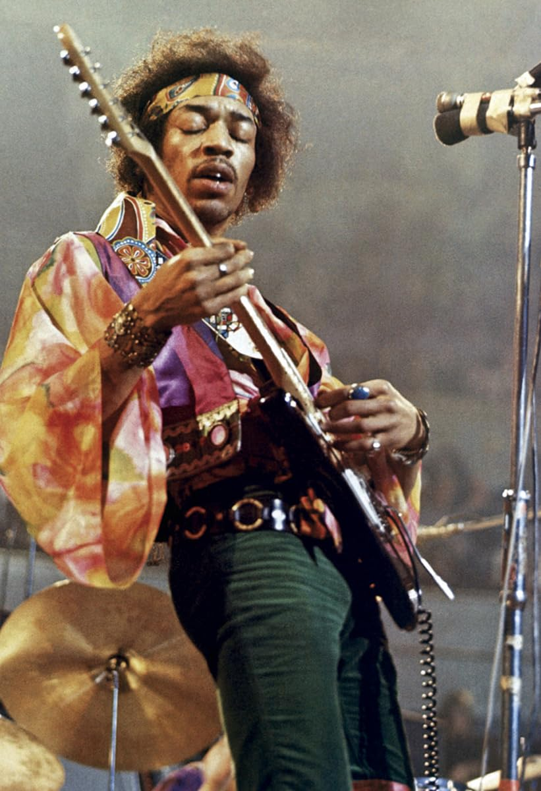
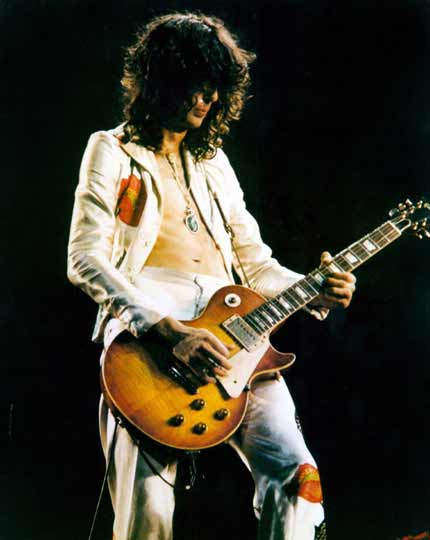
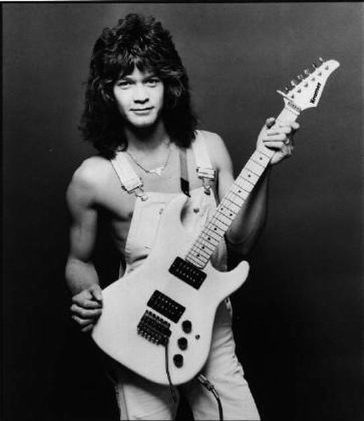
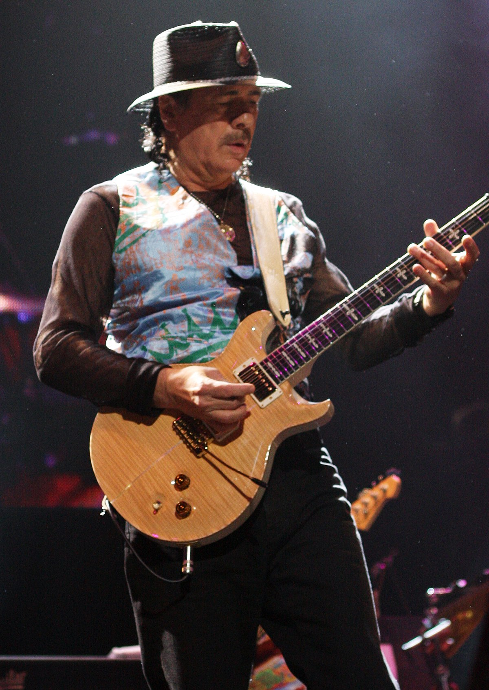
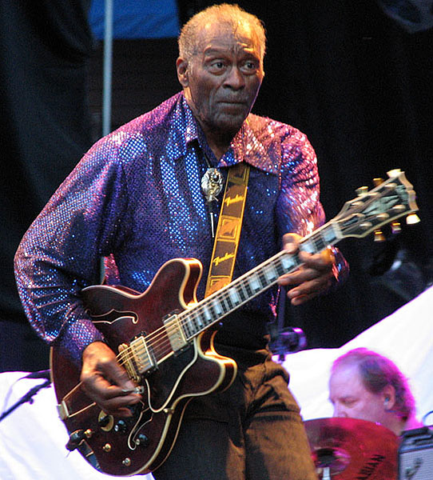

8 ICONICOS GUITARRISTAS

James Marshall Hendrix nació en Seattle Estados Unidos en 1942 y murió en Londres en 1970.
Fue un guitarrista estadounidense
que editó unos 20 discos en toda su carrera pero solo público tres en vida.
Nacido en el seno de una familia complicada, Jimmy empezó a tocar la guitarra a los 12 años y
consiguió su primera guitarra acústica a los 14 años por cinco dólares. Tras una pausa para servir
en el ejército como paracaidista y licenciarse al año siguiente. Comenzó a tocar dando sus primeros pasos en
el blues y
trabajó con músicos como B.B King, Sam Cooke, Jackie Wilson y el dúo Ike/Tina Turner.
No fue hasta 1967 cuando su carrera se lanzó.
La razón fue The Jimi Hendrix Experience junto con Noel Redding y Mitch Mitchell.
Temas como Purple Haze coparon de inmediato las listas de éxitos. Además su fama aumentó
a raíz de algunos festivales entre los que destaca Woodstock en 1970.
En ése festival fue uno de los artistas mejor pagados.
Es conocida su adicción a las drogas y el alcohol y acabó por matarlo en 1970. Tenía 27 años.
Las referencias de Jimmy y sus grandes ídolos fueron,
entre otros Elvis Presley, B.B King, Chuck Berry, Robert Johnson o Muddy Waters
Considerado como uno de los mejores guitarristas de todos los tiempos y muy influyente
incluso después de su fallecimiento.

Eric Patrick Clapton, más conocido como Eric Clapton, es un guitarrista, cantante y compositor
británico nacido en Ripley, Surrey, Inglaterra el 30 de marzo de 1945. Clapton es considerado
como uno de los mejores guitarristas del mundo principalmente por su habilidad con la guitarra eléctrica.
Debido a su gran calidad con este instrumento, sus más allegados,
de modo irónico, le apodaron “Slowhand” (mano lenta), apodo con el que es conocido desde casi sus inicios.
Clapton ha desarrollado una prolífica carrera en solitario desde los años 80 pero previamente había participado en una serie de bandas míticas del panorama de los 70 y 80: The Yardbirds, God y Cream.
Clapton tiene una gran cantidad de canciones mundialmente famosas y ha ganado varios premios Grammy.
Algunas de sus canciones más destacadas son “Cocaine”, “I cant stand it”, “Layla” o “Let it grow”. También compuso “Tears in heaven”, un tema que dedicó a su hijo Conor,
muerto a los cuatro años a consecuencia de un trágico accidente.
Es miembro del Salón de la Fama del Rock and Roll por partida triple:
como miembro de The Yardbirds y de Cream y por su carrera como solista.

Guitarrista y productor británico conocido principalmente por ser el fundador y
colíder de la banda de rock Led Zeppelin. Page comenzó su carrera musical a mediados de los años 1960
y se convirtió en uno de los guitarristas más influyentes y respetados de su generación.
Reconocido por su estilo único de guitarra que influenció a muchos guitarristas
a lo largo de los años. Page está considerado uno de los guitarristas más grandes de todos los tiempos.

Nacido en Holanda el 26 de enero de 1955,
el músico se trasladó a California en los años 60 y se crió en el seno de una familia de músicos.
Su padre era saxofonista profesional y su madre pianista profesional,
lo que le inspiró a dedicarse a la música. A los seis años empezó a tocar el piano, y a los doce, la guitarra.
Rápidamente fue reconocido por su estilo creativo de tocar y ahora se le considera uno de los guitarristas
más innovadores de todos los tiempos.
En 1972, este artista y su hermano Alex formaron una banda y saltaron a la fama debido a su sonido único
y potente. Su álbum de debut, publicado cuatro años después, fue un éxito instantáneo. Incluía algunos
de sus solos icónicos, y fue elogiado como uno de los mejores álbumes de rock jamás publicados.
A partir de entonces, el grupo siguió publicando discos y haciendo giras,
ganando fama y éxito en todo el mundo.

David nació el 6 de marzo de 1946 en Cambridge,Inglaterra.
Hijo de un profesor universitario,
creció en una familia de clase media alta junto a su hermano menor,
Desde temprana edad, David mostró un gran interés en la música. A los 11 años,
recibió su primera guitarra y comenzó a tomar clases de guitarra clásica.
Fue en ese momento cuando descubrió su amor por la música y su deseo de convertirse en músico.

En 1969 publicó Santana y en 1970 Abraxas, con el que obtuvo el primer puesto en las listas
americanas durante seis semanas y más de un millón de copias vendidas.
Su historial incluye ocho álbumes de oro y siete de platino. A lo largo
de su carrera recibió prestigiosos premios, entre los que destacan un Grammy en
1988 al mejor espectáculo instrumental y el honor de tener una estrella en el Camino de la Fama, en Hollywood.

Pasó parte de su adolescencia en un reformatorio como consecuencia de un
robo que cometió. A principios de los cincuenta lideraba un trío de jazz y blues que tocaba
por el circuito local. Su carrera discográfica comienza en 1955, cuando Muddy Waters le envía
a ver a Leonard Chess y graba Maybellene, que sería uno de los primeros éxitos del Rock And Roll.
En 1956 publica cinco singles más.
Steven Siro Vai nació el 6 de junio de 1960 en Cale Place,
New York (Estados Unidos). Siendo apenas un adolescente
se interesó por artistas reconocidos del mundo del rock como Jimi Hendrix y Jimmy Page.
Seguir a estos guitarristas lo motivó a aprender a tocar la guitarra
y para ello tomó clases con el guitarrista de rock instrumental
Joe Satriani que para el momento contaba con 16 años.